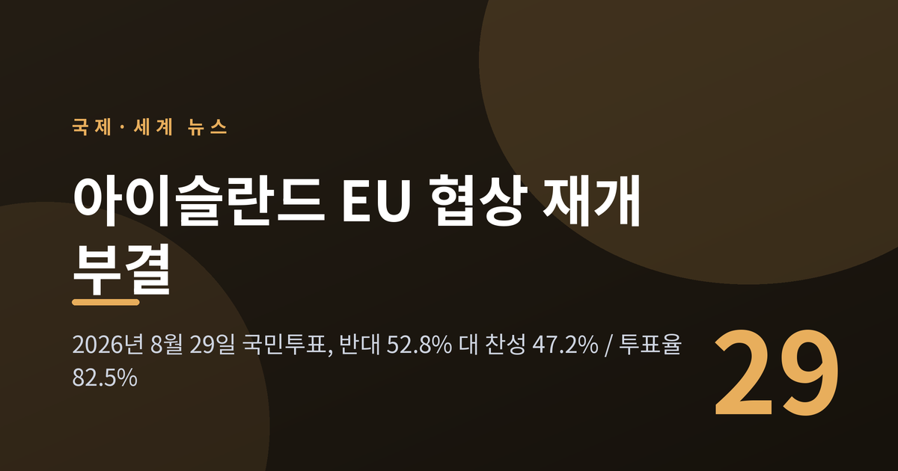
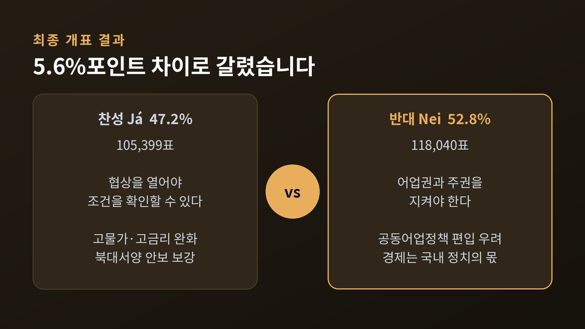
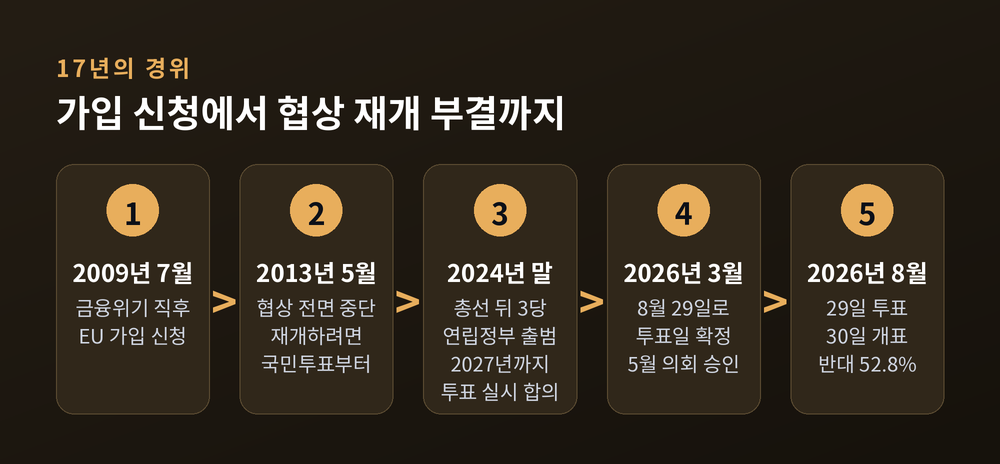
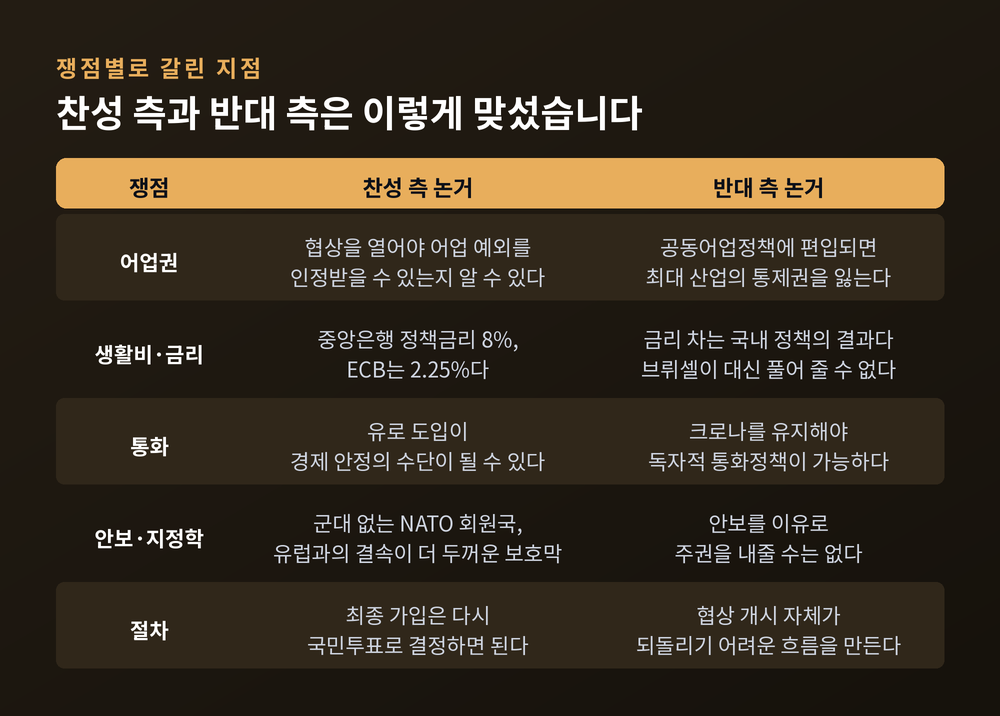
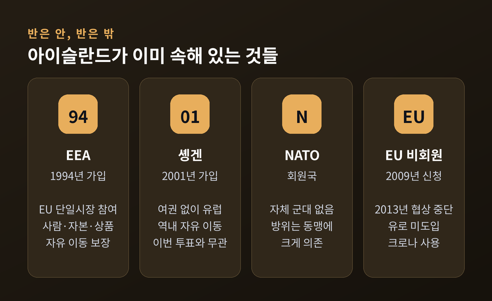
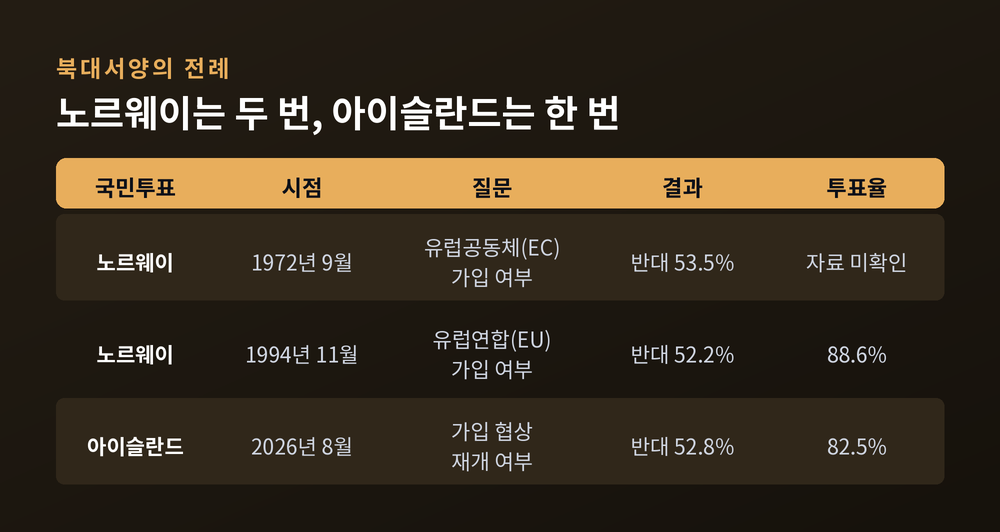
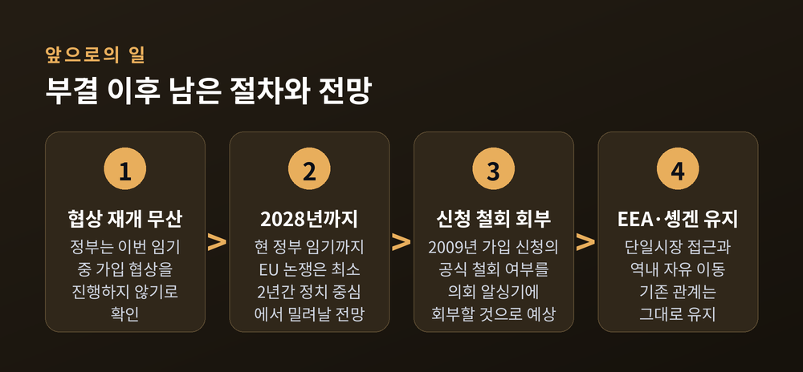

아이슬란드 EU 가입협상 재개 국민투표 부결, 어업권이 갈랐습니다

이번 글에서는 2026년 8월 29일 치러진 아이슬란드 국민투표의 결과와 그 배경을 정리해 보겠습니다. 반대 52.8%, 찬성 47.2%. 투표율은 82.5%였습니다. 표차는 1만 2천여 표였고, 이 투표는 EU 가입 자체가 아니라 13년 전 멈춰 선 가입 협상을 다시 열 것인지를 묻는 자리였습니다.
개표 결과부터 짚겠습니다
투표는 8월 29일 토요일에 치러졌고, 개표 결과는 이튿날인 30일 발표됐습니다.
최종 집계는 반대 118,040표(52.8%), 찬성 105,399표(47.2%)였습니다. 총 투표수는 225,031표, 유권자는 약 27만 명이었습니다. 투표율 82.5%는 아이슬란드 국민투표 기준으로 기록적인 수치로 보도됐습니다.
개표 초반에는 반대 52.5%, 찬성 47.5%라는 잠정치가 나왔습니다. 일부 선거구 표가 남아 있던 시점의 수치였고, 최종 공식 집계는 52.8% 대 47.2%로 확정됐습니다.

무엇을 묻는 투표였는지가 중요합니다
문항은 한 문장이었습니다. "아이슬란드는 유럽연합과의 가입 협상을 다시 시작해야 하는가?" 선택지는 'Já(찬성)'와 'Nei(반대)' 둘뿐이었습니다.
여기서 오해가 자주 생깁니다. 이 투표는 EU 가입 여부를 결정하는 투표가 아니었습니다. 찬성이 나왔다면 정부가 브뤼셀과 협상 테이블에 다시 앉을 수 있었고, 협상이 타결된 뒤 실제 가입 여부는 또 한 번의 국민투표에 부쳐질 예정이었습니다.
법적 성격도 짚어 둘 필요가 있습니다. 이번 투표는 구속력이 없는 자문 투표였습니다. 다만 크리스트룬 프로스타도티르 총리가 이끄는 중도좌파 연립정부는 결과를 존중하겠다고 사전에 공언했고, 개표 직후 이번 임기 중에는 가입 협상을 진행하지 않겠다고 확인했습니다. 현 정부 임기는 2028년까지입니다.
2009년부터 2026년까지, 17년의 경위
아이슬란드가 EU 문을 두드린 것은 2009년 7월입니다. 2008년 금융위기로 은행 시스템이 무너진 직후였습니다. 사회민주동맹이 이끌던 당시 정부는 유럽이라는 큰 우산 아래로 들어가는 길을 택했습니다.
협상은 약 3년간 진행됐습니다. 그러나 공동어업정책을 비롯한 핵심 쟁점이 끝내 정리되지 않았습니다.
2013년 4월 총선에서 좌파 여당이 참패하고 중도 진보당이 대승했습니다. 그해 5월 진보당과 독립당은 연립 합의를 통해 가입 협상을 전면 중단했습니다. 동시에 원칙 하나를 세웠습니다. 협상을 다시 열려면 반드시 국민투표를 먼저 거쳐야 한다는 것이었습니다.
2014년 2월에는 정부가 국민투표 없이 가입 신청 자체를 철회하려다 역풍을 맞았습니다. 레이캬비크 의회 앞에 수천 명이 모였고, 그해 2월 말 조사에서는 82%가 국민투표 실시에 찬성했습니다. 2015년 1월까지 유권자의 22.1%에 해당하는 53,555명이 국민투표 요구 청원에 서명했습니다.
예전엔 '가입할 것인가'가 질문이었습니다. 지금은 '물어볼 것인가'가 먼저 논쟁이 됐습니다.
2024년 총선 뒤 사회민주동맹·비드레이스·국민당 3당이 연립정부를 꾸리며 2027년까지 국민투표를 실시하기로 합의했고, 그 약속이 2026년 8월에 앞당겨 이행된 셈입니다.

쟁점 하나 — 어업권과 공동어업정책
반대 진영이 가장 강하게 밀어붙인 논거는 어업이었습니다.
EU의 공동어업정책은 회원국의 어획 쿼터를 설정하고 수역에 대한 공동 접근을 허용합니다. 반대 측은 이 체제에 편입되면 아이슬란드가 자국 최대 산업에 대한 통제권을 잃는다고 봤습니다.
수산업이 아이슬란드 경제에서 차지하는 비중은 산정 기준에 따라 다릅니다. 어업이 수출 수입의 약 40%를 담당한다는 집계가 있고, 2024년 기준 해양 제품이 상품·서비스를 합친 총수출의 21%라는 통계도 있습니다. GDP 기여는 12% 이상, 수산가공·해양기술·양식까지 포함한 '해양 클러스터' 전체로 넓히면 GDP의 25~30% 수준으로 잡힙니다. 고용은 노동력의 약 5%입니다.
숫자의 폭은 넓지만, 방향은 하나를 가리킵니다. 이 나라에서 바다는 산업 하나가 아니라 경제의 뼈대에 가깝습니다.
찬성 측도 이 지점을 부정하지는 않았습니다. 협상을 열어 봐야 어업 예외를 받아낼 수 있는지 알 수 있다는 것이 찬성 측 논리였습니다. 반대 측은 협상 개시 자체가 되돌리기 어려운 흐름을 만든다고 맞섰습니다.
쟁점 둘 — 8%와 2.25%, 크로나와 유로
논쟁의 두 번째 축은 생활비와 통화였습니다.
찬성 측은 높은 물가와 고금리를 문제 삼았습니다. 아이슬란드 중앙은행 정책금리는 8%입니다. 유럽중앙은행은 2.25%입니다. 같은 대륙에서 3배 이상 벌어진 금리 차이가 대출과 물가로 이어진다는 것이 찬성 측의 지적이었습니다. 일부는 유로화 도입을 경제 안정의 수단으로 봤습니다.
정부도 이 논쟁을 가볍게 다루지는 않았습니다. 2024년 연립정부는 국민투표에 앞서 독립 전문가 패널을 구성해, 크로나를 유지하는 쪽과 유로를 도입하는 쪽의 장단점을 따로 평가하게 했습니다. 더 성숙한 논의를 위한 조치라고 설명했습니다.
반대 측 논리도 분명했습니다. '반대' 캠페인을 이끈 야당 독립당 대표 구드룬 하프스테인스도티르는 이렇게 말했습니다.
"이건 브뤼셀이 우리 대신 풀어 줄 문제가 아닙니다."
경제 문제의 원인이 통화 체제가 아니라 국내 정책에 있다는 주장이었습니다. 그는 개표 뒤에도 이번 결과가 정부에는 타격이지만 유럽과의 관계 자체에 대한 타격은 아니라는 취지로 말했습니다.

쟁점 셋 — 그린란드 발언과 북대서양 안보
이번 투표가 2026년 8월로 앞당겨진 데에는 뚜렷한 계기가 있었습니다.
아이슬란드는 NATO 회원국이지만 자체 군대가 없습니다. 방위를 동맹에 크게 의존하는 구조입니다.
원래 이 국민투표는 2027년으로 계획돼 있었습니다. 그런데 도널드 트럼프 미국 대통령이 스위스 다보스 세계경제포럼에서 그린란드 인수 구상을 이야기하면서 '아이슬란드'라는 이름을 네 차례 언급했습니다. 백악관은 트럼프가 그린란드와 아이슬란드를 혼동한 것이 아니라고 해명했습니다. 다만 여러 차례 그렇게 말하는 장면이 영상으로 남아 있다는 보도도 함께 나왔습니다.
여기에 트럼프 2기 행정부가 아이슬란드산 제품에 부과한 관세 인상이 겹쳤습니다. 정부는 유럽과의 결속 강화가 아이슬란드에 더 두꺼운 보호막이 된다고 주장하며 일정을 당겼습니다.
결과적으로 안보 불안은 표를 움직이는 결정적 변수가 되지 못했습니다. CNN은 유권자들이 어장이 위험을 감수하기엔 너무 중요하다는 쪽의 손을 들어줬다고 정리했습니다. 안보라는 추상적 위험보다 어업이라는 구체적 생계가 앞섰다는 해석이 가능한 대목입니다. 다만 47.2%라는 찬성 비율은 안보 논거가 결코 소수 의견이 아니었음도 함께 보여줍니다.
아이슬란드는 이미 '반은 안, 반은 밖'입니다
이번 부결로 아이슬란드가 유럽에서 멀어지는 것은 아닙니다.
아이슬란드는 1994년 유럽경제지역(EEA)에 가입했습니다. EU 단일시장에 참여하며 상품·서비스·사람·자본의 자유 이동을 보장받습니다. 2001년에는 솅겐 지역에도 들어갔습니다. 여권 없이 유럽 역내를 오갈 수 있습니다.
영국의 한 유럽 연구 기관은 이 상태를 "반은 안, 반은 밖"이라고 표현했습니다. 회원국은 아니지만 단일시장의 혜택은 대부분 누리는 구조입니다.
이번 투표 결과로 EEA와 솅겐 지위는 달라지지 않습니다. 기존 관계는 그대로 유지됩니다. 바꿔 말하면, 유권자 다수는 이미 갖고 있는 것을 지키는 쪽을 택했다고 볼 수 있습니다.

노르웨이가 먼저 걸었던 길
북유럽에는 비슷한 전례가 있습니다.
노르웨이는 1972년 9월 유럽공동체 가입을 묻는 국민투표에서 반대 53.5%로 부결시켰습니다. 1994년 11월 EU 가입 국민투표에서도 반대 52.2%, 투표율 88.6%로 다시 부결됐습니다. 두 번 모두 근소한 차이였습니다.
노르웨이 역시 EEA를 통해 단일시장에는 참여하고 있습니다. 연구자들은 두 차례 부결의 핵심 축으로 어업과 농업 등 1차 산업의 주권 문제를 지목합니다.
이번 아이슬란드의 52.8%는 노르웨이 1994년의 52.2%와 놀랄 만큼 닮았습니다. 북대서양의 두 나라가 30여 년 간격을 두고 거의 같은 지점에서 멈춰 선 셈입니다.

앞으로 무엇이 달라지나
당장 제도가 바뀌는 것은 없습니다.
정부는 이번 임기 중 가입 협상을 재개하지 않습니다. 현 정부 임기는 2028년까지이므로, EU 논쟁은 최소 2년간 아이슬란드 정치의 중심에서 밀려날 전망입니다.
한 가지 남은 절차가 있습니다. 정부는 2009년에 낸 EU 가입 신청을 공식적으로 철회할지 여부를 의회 알싱기에 회부할 것으로 예상됩니다. 이 결정이 어떻게 나느냐에 따라 향후 재개의 문턱 높이가 달라집니다.
한계도 분명히 해 두겠습니다. 5.6%포인트 차이는 국민 여론이 한쪽으로 정리됐다고 말하기 어려운 폭입니다. 실제로 2026년 5월 조사에서는 가입 반대가 과반이었고, 6월 조사에서는 협상 재개 지지가 과반으로 나왔습니다. 여론은 투표 직전까지 흔들렸습니다.
프로스타도티르 총리는 이번 캠페인이 아이슬란드의 세계 속 위치에 관한 논의를 촉발했다고 평가했습니다. 결과와 무관하게 국정은 계속하겠다고도 덧붙였습니다. 반대 진영 역시 유럽과의 관계 자체를 끊자는 주장은 하지 않았습니다. 양측 모두 유럽 안에 머무는 방식을 두고 다퉜을 뿐이라는 점은 기억해 둘 만합니다.

정리하면 이렇습니다.
아이슬란드 유권자들은 유럽을 거부한 것이 아니라, 유럽과의 거리를 지금 상태로 두는 쪽을 택했습니다. 어업이라는 구체적 생계가 안보라는 추상적 불안보다 조금 더 무거웠습니다. 그 차이가 5.6%포인트였습니다.
투표가 끝난 뒤에도 질문 하나는 남습니다. 북대서양의 지정학이 지금보다 더 흔들린다면, 그때도 같은 답이 나올지는 아무도 장담하기 어렵습니다.